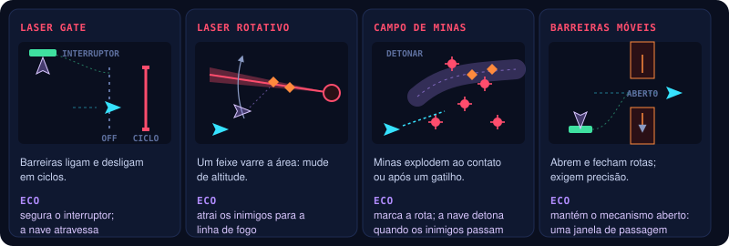
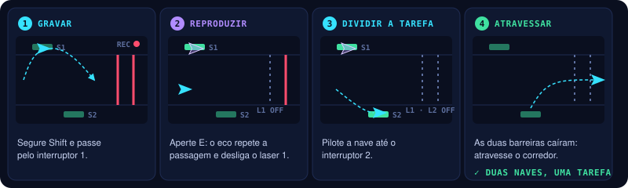

GDD completo
Os dez capítulos de docs/gdd/ numa página, com o texto como está no Markdown. Cada capítulo abre com seu cabeçalho (dono, status, data, fonte) e fecha com as perguntas em aberto. O resumo de uma página está em gdd.html.
Capítulos
mecânica → dinâmica → estética → produção01Visão geral
Fonte: GDD v0.1 (PDF) §1, §2 e §17 · docs/gdd/01-visao-geral.md
O que o jogo é, qual é a fantasia do jogador, os pilares que orientam cada decisão e o formato do protótipo.

High concept
Um shooter de nave em que o jogador grava e reproduz suas próprias ações passadas para lutar ao mesmo tempo com versões anteriores de si mesmo, desviar de armadilhas e explorar combinações temporais para derrotar chefes.
O tema central é One More Time: cada tentativa deixa para trás ações que podem ser reproduzidas para criar novas estratégias.
| Pilar de design | Cada tentativa deve ensinar algo e criar uma nova possibilidade |
|---|---|
| Fantasia do jogador | Ser um piloto preso num ciclo temporal que transforma cada movimento, esquiva e disparo em parte de uma estratégia maior |
| Premissa de câmera | Side-scrolling 2.5D: mundo 3D visto por uma câmera lateral que lê como 2D; a nave avança na horizontal — referência: as fases de avião de Cuphead |
Por quê: o jogador não fica mais forte por ter mais vida ou dano. Ele fica mais forte porque aprende a coordenar suas ações com as versões anteriores da nave.
Pilares de experiência
As ações gravadas viram ecos que repetem trajetórias, tiros e gadgets.
Dominar o movimento, ler padrões de ataque e criar boas trajetórias.
Armadilhas, dispositivos e chefes vencidos por sincronização e posicionamento, não só por dano bruto.
Formato e escopo
| Gênero | Shooter side-scrolling 2.5D com padrões de bullet hell |
|---|---|
| Câmera | Lateral, com avanço horizontal; leitura 2D sobre um mundo 3D |
| Plataforma-alvo | PC |
| Motor | Unity 6 (6000.3.25f1), URP 17.3 e Input System 1.20 |
| Visual | Mundo e jogabilidade em 3D; parte dos elementos serão sprites 2D → 08 |
| Modo | Single-player |
| Estrutura | Runs curtas com encontros de combate e chefe → 06 |
| Duração-alvo da run | 5–10 minutos no protótipo completo |
| Duração de uma gravação | 5 segundos → 02 |
| Ecos simultâneos | Até 3 no protótipo |
| Conteúdo inicial | Uma arena, um conjunto de armadilhas e um chefe |
| Controles | Teclado e mouse, ou só teclado; suporte a controle pode vir depois → 07 |
| Contexto | Protótipo para game jam |
Os números são parâmetros iniciais de design para testar, não valores definitivos.
Resumo executivo
O diferencial é transformar o próprio histórico do jogador em ferramenta de gameplay. Uma esquiva pode virar distração, um disparo pode preparar um ataque posterior e um gadget pode abrir uma rota que seria impossível atravessar sozinho.
Observar o eco executando exatamente o que foi gravado.
Usar a nave atual e o eco para atacar, desviar ou manipular armadilhas.
Perceber uma solução temporal para um desafio que parecia impossível.
- Quem é dono de cada capítulo deste GDD? Hoje todos estão como _TBD_.
- Público-alvo: não está escrito no GDD v0.1.
- O GDD v0.1 descrevia o jogo como 2D; a correção para 2.5D vem do dono do projeto, e outros trechos do v0.1 ainda podem assumir 2D. → 09
02Loop e eco temporal
Fonte: GDD v0.1 (PDF) §3 e §4; protótipo em Assets/_Project (EchoRecorder, EchoAbility, EchoGhost, SwitchPad) · docs/gdd/02-eco-temporal.md
O loop central do jogo e o sistema que o sustenta: o que é gravado, como o eco nasce e as regras que o mantêm previsível.
Core gameplay loop
O jogo gira em torno de aprender os padrões, gravar ações úteis e usá-las para criar oportunidades de ataque.

O que o jogador grava
O sistema registra uma sequência de ações da nave numa janela de cinco segundos.
| Dado | Comportamento |
|---|---|
| Posição | A posição da nave ao longo do tempo |
| Rotação | A orientação da nave |
| Disparos | Instante, tipo e direção de cada tiro |
| Gadgets | Momento e direção de uso |
| Duração | 5 segundos por gravação |
| Reprodução | Uma cópia independente repete a sequência |
| Limite | Até 3 ecos ativos no protótipo |
A gravação não é um replay de vídeo: é uma lista de dados que permite reproduzir os eventos da nave → 09.
Ciclo de gravação

- O jogador segura Shift: a gravação começa.
- O jogo armazena até 5 segundos de movimento e eventos.
- Ao soltar, a sequência fica pronta.
- O jogador aperta E para invocar o eco.
- O eco é uma nave fantasma que começa no ponto inicial gravado e executa a sequência na mesma ordem.
- Depois da reprodução o eco desaparece — a menos que uma habilidade permita mantê-lo ativo.
Durante a reprodução o jogador continua controlando a nave atual e pode gravar uma nova sequência. A gravação tem um indicador visual de tempo restante, para o jogador planejar sem olhar o tempo todo para a interface → 07.
Regra fundamental
Por quê: evita a complexidade de rebobinar a simulação inteira e torna o sistema mais previsível.
Limites e consistência
| O eco… | Regra |
|---|---|
| Decide? | Não. Não toma decisões nem corrige a trajetória |
| Persegue inimigos? | Não. A reprodução não muda de direção |
| Atira para onde? | Para a direção registrada |
| Colide com a nave atual? | Não |
| Recebe dano? | Não, de projéteis comuns (no protótipo) |
| Usa gadgets? | Sim, e obedece às regras de cada gadget |
| Quantos ao mesmo tempo? | Limitado, para a tela não ficar ilegível |
Dispositivos de presença contínua. Um eco pode manter um interruptor ativado enquanto sua trajetória permanece sobre ele, mas não ativa um mecanismo só por passar perto — a menos que essa seja a regra explícita do objeto.
No protótipo atual
| Regra | Como está implementado |
|---|---|
| Espaço da gravação | Posições relativas à tela (o playfield que rola), não ao mundo: o eco refaz o mesmo trajeto na tela mesmo com a câmera avançando |
| Uma gravação por eco | Invocar consome a gravação; para outro eco, grave de novo (EchoConfig.consumeRecordingOnInvoke, ligado) |
| Limite de 5 s | A gravação para sozinha em 5 s; para começar outra é preciso soltar Shift |
| Ecos ao mesmo tempo | Até 3 (EchoConfig.maxActiveEchoes) |
| Corpo do eco | Sem colisor e sem vida: não bloqueia a nave nem recebe dano |
| Entrada e saída | O eco aparece e some com um fade de 0,2 s |
| Gadget | O uso da mina temporal entra na gravação (EchoEventType.Gadget); o eco solta a mina no mesmo ponto e instante → 05 |
| Interruptores | O eco segura um interruptor enquanto está sobre a placa. O interruptor confere posições, não colisões, então o eco sem colisor também conta → 05 |
| Puzzles fixos no mundo | A rolagem para no trecho do interruptor (TrapSection zera Playfield.ScrollSpeed), então o eco volta ao ponto onde foi gravado |
Por quê: num side-scroller a tela anda o tempo todo; gravar em coordenadas do mundo deixaria o eco para trás, fora da tela, poucos segundos depois.
- Regra final para dispositivos que exigem presença contínua: o GDD v0.1 marca como decisão da versão final. O protótipo segura o interruptor só enquanto o eco ou a nave está sobre a placa, com 0,15 s de folga ao sair.
- O eco recebe dano de projéteis especiais ou do chefe? O v0.1 só diz "comuns, no protótipo".
- Ecos simultâneos no MVP: §2 fala em até 3, mas o MVP (§14) põe "até três ecos" como opcional. O protótipo já suporta 3. → 10
- Puzzles com interruptores fixos no mundo (Puzzle 1) e gravação relativa à tela: a rolagem para nesses trechos (
Playfield.ScrollSpeed = 0) ou o eco grava em coordenadas do mundo ali? O protótipo para a rolagem; falta confirmar como regra. → 05 - Manter a gravação consumida a cada invocação, ou permitir reinvocar a mesma gravação?
03Combate
Fonte: GDD v0.1 (PDF) §5.1–5.4; protótipo em Assets/_Project (prefabs PlayerShip, Drone, Ondulante; ComboTracker, CrossfireRule, SynchronizedStrikeRule) · docs/gdd/03-combate.md
O que a nave do jogador faz, os tipos de dano, os combos temporais e o que a pontuação premia.
Nave do jogador
- Movimento em oito direções dentro da área jogável.
- Disparo principal contínuo.
- Um gadget equipado → 05.
- A habilidade de gravação e reprodução temporal → 02.
- Vida limitada e invulnerabilidade breve depois de receber dano.
O jogador atira enquanto se move. O foco é esquivar e se posicionar, não alternar o tempo todo entre movimento e ataque.
Valores de partida no protótipo
| Item | Valor | Onde mudar |
|---|---|---|
| Integridade da nave | 3 | PlayerShip → Health |
| Invulnerabilidade após dano | 1,2 s | PlayerShip → Health |
| Velocidade da nave | 9 u/s | PlayerShip → ShipMotor |
| Disparo principal | 10 tiros/s, dano 1 | PlayerShip → ShipWeapon, Shot_Ship |
| Drone | 2 de vida, 100 pontos | Drone |
| Ondulante | 1 de vida, 100 pontos | Ondulante |
| Inimigo que bate na nave | 1 de dano | ContactDamage |
| Mina temporal | 4 de dano de gadget num raio de 2,4 u; recarga de 1,5 s | TimeMine_Ship, TimeMine_Echo, PlayerShip → ShipGadget |
| Laser gate e barreira móvel | 1 de dano ao contato | prefabs em Prefabs/Traps |
| Tiros do Guardião | 1 de dano | Shot_Enemy |
| Guardião | núcleo 120 de vida, geradores 12 | Guardian → 06 |
| Crossfire | janela de 1 s entre o acerto da nave e o do eco; +3 de dano combinado; o mesmo alvo só dá outro Crossfire depois de 1 s | ComboTracker (cena, em Systems) |
| Synchronized Strike | janela de 2,5 s entre a queda dos dois geradores | ComboTracker |
Valores para testar, não definitivos.
Tipos de dano
| Tipo | Origem |
|---|---|
| Direto | Tiros convencionais da nave |
| De gadget | Minas, pulsos ou ataques especiais |
| Combinado | Efeitos especiais ativados quando as ações da nave atual e do eco coincidem |
O código também marca o dano de contato (um inimigo que bate na nave), que o GDD v0.1 não lista. O protótipo separa os tiros da nave dos tiros do eco (ShotSource), e é isso que os combos usam. O dano de gadget é o da mina temporal → 05. O dano combinado é o bônus do Crossfire.
Combos temporais
Os combos são eventos específicos que o jogo reconhece, não multiplicadores genéricos.

| Combo | Condição | Resultado |
|---|---|---|
| Crossfire | Nave atual e eco acertam o mesmo alvo numa janela curta | Dano adicional |
| Trap Bait | O eco atrai inimigos para uma armadilha | Inimigos atingidos pela armadilha |
| Double Pulse | Dois pulsos atingem mecanismos conectados | Sobrecarga ou desativação |
| Reflect Chain | Um projétil ricocheteia em escudos posicionados em sequência | Dano elevado ao alvo |
| Synchronized Strike | Dois pontos fracos são atingidos quase ao mesmo tempo | Escudo do chefe desativado |
Cada combo tem feedback visual e sonoro próprio → 08.
Por quê: o jogador precisa entender por que a combinação funcionou — é assim que ele aprende a repeti-la.
No protótipo atual
Dois dos cinco combos existem: Crossfire e Synchronized Strike. Os dois partem de acertos reais da nave e do eco: um tiro ou uma mina conta para quem o disparou, a nave atual ou um eco.
| Combo | Como o jogo reconhece | Resultado |
|---|---|---|
| Crossfire | A nave e um eco acertam o mesmo alvo (inimigo, gerador ou núcleo do Guardião) com até 1 s de diferença. Dois acertos da mesma fonte não contam. Cada par de acertos dá um combo só, e o mesmo alvo só dá outro depois de 1 s | +3 de dano combinado no alvo, se ele ainda estiver vivo, e 100 pontos |
| Synchronized Strike | Os dois geradores do Guardião caem com até 2,5 s de diferença, um derrubado pela nave e o outro por um eco, e o núcleo fica vulnerável | O escudo do núcleo cai, pela regra do próprio Guardião → 06, e 1000 pontos |
Os dois ficam no ComboTracker; as regras, em CrossfireRule e SynchronizedStrikeRule (Core, com testes). O feedback, por enquanto, é só o aviso no HUD → 07: o nome do combo e o que o causou. Ainda não há som nem efeito no mundo.
Os tamanhos das janelas são valores de partida, generosos de propósito (o §16 pede janelas de sincronização generosas no começo): 1 s para o Crossfire; 2,5 s para o Synchronized Strike, o mesmo da janela curta da fase 3 do Guardião. Falta validar jogando.
Por quê: derrubar os geradores sem o eco ainda abre o núcleo, se o jogador for rápido o bastante (pergunta em aberto em 06). O Synchronized Strike não muda essa regra: ele reconhece e premia quando a abertura veio da nave e do eco juntos.
Pontuação por habilidade
- Combos temporais.
- Inimigos eliminados por armadilhas.
- Sequências sem sofrer dano.
- Sincronizações precisas.
- Destruição de projéteis ou mecanismos usando o ambiente.
A pontuação não é necessária para terminar a fase. Ela incentiva o domínio da mecânica e a rejogabilidade.
No protótipo atual a pontuação é 100 por inimigo abatido, 250 por gerador do Guardião, 5000 pelo núcleo, 100 por Crossfire e 1000 por Synchronized Strike, como placeholder. Dos prêmios acima, só os combos temporais existem. A tela de vitória mostra quantos combos o jogador fez.
- Valores de vida, dano e invulnerabilidade: os de partida estão na tabela acima; falta validar jogando.
- O dano de contato entra como quarta categoria, ou é parte do dano direto?
- Combos temporais: Crossfire e Synchronized Strike implementados; faltam Trap Bait, Double Pulse e Reflect Chain. Trap Bait depende de armadilhas que firam inimigos, e as do protótipo só ferem a nave; Double Pulse depende do pulso de interferência; Reflect Chain, do escudo refletor (expansão).
- Tamanho da "janela curta" de Crossfire e Synchronized Strike: o protótipo usa 1 s e 2,5 s como valores de partida (§16 pede janelas generosas no começo). Falta validar jogando.
- Crossfire: o bônus (+3 de dano combinado) e o intervalo de 1 s antes de o mesmo alvo dar outro combo são valores de partida, não vêm do v0.1.
- Synchronized Strike: deve ser a única forma de abrir o núcleo (o que responderia à pergunta dos geradores sem regeneração em 06), ou continua só reconhecendo e premiando a abertura feita com o eco?
- Feedback próprio de cada combo: o protótipo só tem o aviso no HUD; faltam o som exclusivo e um efeito no mundo → 08.
04Inimigos e ondas
Fonte: GDD v0.1 (PDF) §5.5; protótipo em Assets/_Project/Data/Waves/Encounter01_PrimeiroCiclo.asset · docs/gdd/04-inimigos-e-ondas.md
Quem a nave enfrenta, como cada inimigo conversa com o eco, e como as ondas entram na tela.
Os inimigos surgem durante o avanço da fase, entrando pela direita (e às vezes por cima ou por baixo). Em vez de spawn aleatório, cada encontro segue uma lista de ondas com tempo e posição definidos.
Por quê: o jogador aprende o padrão e consegue planejar o que gravar no eco.
Tipos de inimigo

| Inimigo | Comportamento | Papel com o eco |
|---|---|---|
| Drone (reto) | Entra pela direita e voa em linha reta; não atira | Alvo fácil para Crossfire; ensina a gravação |
| Ondulante | Zigue-zague senoidal, em grupos de 3 a 5 | Pode ser conduzido para armadilhas (Trap Bait) |
| Torreta | Parada no cenário, atira na direção da nave | Exige que nave e eco ataquem de posições diferentes |
Para a jam, a recomendação é começar com um tipo e adicionar os outros dois só se o núcleo já estiver divertido.
Regras de surgimento
- As ondas são definidas por script: tempo de entrada, ponto de entrada, tipo e quantidade.
- Cada onda sinaliza a entrada com um aviso visual curto (seta ou brilho na borda da tela).
- Inimigos que saem pela esquerda são removidos sem penalidade.
- O número de inimigos simultâneos é limitado, para a tela continuar legível com os ecos ativos.
- Matar inimigos nunca é obrigatório para avançar; o scroll continua.
Exemplo — Encontro 1 (primeiro ciclo)

| Tempo | Onda | Objetivo de design |
|---|---|---|
0:00–0:10 | Sem inimigos; só obstáculos básicos | Aprender movimento e tiro |
0:10–0:25 | 3 drones em fila, vindo do centro | Primeiros alvos, sem pressão |
0:25–0:40 | Drones em dois níveis de altura | Incentivar gravar uma rota e deixar o eco cobrir um nível |
0:40–1:00 | Primeiro grupo de ondulantes | Ler o padrão e atacar com nave e eco ao mesmo tempo |
1:00–1:20 | Torreta + drones | Introduzir a ideia de dividir tarefas entre nave e eco |
No protótipo atual o encontro 1 está em Encounter01_PrimeiroCiclo.asset, com estas diferenças:
- Drone e ondulante existem; a torreta ainda não, então 1:00–1:20 usa só drones.
- Os primeiros 10 s não têm obstáculos (ainda não existem): é voo livre.
- Há ondas extras em 0:33 (drones em dois níveis), 0:50 (ondulantes) e 1:10 (drones), para o encontro não ficar vazio.
- O aviso de entrada é um marcador piscando na borda direita, 0,8 s antes da onda.
- O encontro termina 4 s depois da última onda, quando não resta inimigo vivo; aí começa o corredor de armadilhas → 06.
Os tempos são valores de partida para testar. As ondas dos encontros 2 e 3 reaproveitam os mesmos três inimigos, combinados com as armadilhas e o gadget → 06.
- Limite de inimigos simultâneos na tela: _TBD_ (o protótipo ainda não limita).
- Torreta: falta implementar.
- Ondas dos encontros 2 e 3: só o encontro 1 tem linha do tempo no v0.1.
05Armadilhas, gadgets e puzzles
Fonte: GDD v0.1 (PDF) §6, §7 e §8; protótipo em Assets/_Project (TrapSection, LaserGate, MovingBarrier, SwitchPad, ShipGadget, TimeMine) · docs/gdd/05-armadilhas-gadgets-puzzles.md
O cenário que desafia o movimento, as ferramentas que a nave carrega e os puzzles que só se resolvem com o eco.
Armadilhas e obstáculos
As armadilhas são parte central do jogo: desafiam a movimentação e permitem soluções com os ecos.

| Armadilha | Desafio | Interação temporal |
|---|---|---|
| Laser gate | Barreiras que ligam e desligam em ciclos; atravessar no momento seguro | O eco ativa um interruptor que desliga uma barreira enquanto a nave atravessa outra |
| Laser rotativo | Um feixe varre a área e obriga a mudar de altitude | O eco atrai inimigos para a linha de fogo, ou repete uma sequência de ativação de escudos |
| Campo de minas | Minas explodem ao contato ou depois de um gatilho | A nave dispara um detonador quando os inimigos passam pela região registrada pelo eco |
| Barreiras móveis | Obstáculos que abrem e fecham rotas; exigem precisão | O eco mantém um mecanismo num estado, abrindo uma janela de passagem |
No protótipo atual
O protótipo tem o laser gate (em duas variações: com ciclo, e preso a um interruptor) e as barreiras móveis, ligados por um interruptor de presença. Ficam no corredor do encontro 2 (prefab TrapSection_Corredor), que entra pela direita quando as ondas do encontro 1 acabam → 06.
| Peça | Como funciona | Valores de partida |
|---|---|---|
| Laser gate com ciclo | Feixe vertical de ponta a ponta da tela; liga e desliga sozinho e pisca uma linha fina de aviso antes de ligar | 1,5 s ligado, 1,5 s desligado, aviso nos últimos 0,5 s |
| Laser gate do interruptor | Sempre ligado; desliga enquanto alguém está sobre o interruptor ligado a ele | — |
| Barreira móvel | Dois blocos, um de cima e um de baixo, que se afastam e se fecham no meio da tela | fechada 1,2 s, abre em 0,5 s, aberta 1,6 s, fecha em 0,5 s; vão de 4,5 u |
| Interruptor de presença | Fica pressionado enquanto a nave ou um eco está sobre a placa; acende ciano para a nave e violeta para o eco, junto com o conduto até o laser | placa de 1,8 × 1,4 u; solta 0,15 s depois que a placa fica vazia |
| Dano | Feixe e blocos ferem a nave ao contato; não ferem inimigos nem o eco | 1 de dano, com a invulnerabilidade normal da nave → 03 |
O corredor, na ordem em que chega: o laser com ciclo e a barreira móvel atravessam a tela com a rolagem, e a nave precisa passar por eles no momento certo. Depois a rolagem para com o interruptor e o laser preso a ele na tela; o encontro termina quando a nave passa desse laser. Aí as armadilhas desligam, a tela acelera para tirar o corredor de cena e o chefe entra.
Por quê: a gravação é relativa à tela → 02. Com a rolagem parada, o eco volta exatamente ao ponto do interruptor onde foi gravado.
Gadgets
A nave carrega um gadget por vez no protótipo. O objetivo é criar escolhas táticas sem sobrecarregar os controles.
| Gadget | Função principal | Interação temporal | Escopo |
|---|---|---|---|
| Mina temporal | Explode por proximidade ou detonação | O eco reproduz a colocação de minas | inicial |
| Pulso de interferência | Desativa por um tempo lasers e sensores | Duas ativações podem sincronizar mecanismos | inicial |
| Escudo refletor | Bloqueia ou reflete certos tiros | Permite construir uma sequência de ricochetes | expansão |
| Arpão magnético | Puxa a nave ou inimigos leves | Pode conduzir inimigos para uma armadilha | expansão |
Escudo refletor e arpão ficam para expansões, caso o núcleo já esteja divertido.
No protótipo atual
O gadget do protótipo é a mina temporal, na tecla Q (ShipGadget na nave, prefab TimeMine_Ship).
| Regra | Valor de partida |
|---|---|
| Onde cai | No ponto da nave, e fica parada no mundo: não acompanha a tela que rola |
| Armar | 0,4 s depois de solta; antes disso não explode |
| Explosão | Quando um inimigo chega a 1,4 u da mina armada, ou sozinha depois de 4 s |
| Dano | 4, do tipo gadget, em todo inimigo num raio de 2,4 u → 03 |
| Recarga | 1,5 s entre uma mina e outra |
| Com o eco | O uso entra na gravação (EchoEventType.Gadget) e o eco solta uma mina (TimeMine_Echo, violeta) no mesmo ponto e no mesmo instante da gravação |
O pulso de interferência ainda não existe.
Puzzles integrados ao combate
Os puzzles surgem naturalmente durante o voo e duram poucos segundos. São desafios de leitura, sincronização e execução.
Puzzle 1 — Dois interruptores
Objetivo: atravessar um corredor com dois lasers ligados a interruptores em pontos diferentes.

- Gravar uma passagem pelo primeiro interruptor.
- Reproduzir o eco para repetir essa ativação.
- Pilotar a nave atual até o segundo interruptor.
- Atravessar o corredor com as duas barreiras desativadas.
O jogador aprende a dividir uma tarefa entre duas versões da nave.
No protótipo, o corredor do encontro 2 tem a versão com um interruptor: grave a nave parada sobre o interruptor, invoque o eco e atravesse o laser enquanto o eco segura o interruptor.
Puzzle 2 — Refletir o ataque do chefe
Objetivo: atingir um núcleo protegido usando o ataque do próprio chefe.
- O chefe dispara um projétil pesado.
- O jogador grava uma sequência que posiciona um escudo refletor.
- O eco reproduz a colocação da barreira.
- O jogador se posiciona para induzir o disparo na direção certa.
- O projétil ricocheteia e atinge o núcleo.
Depende do escudo refletor — pode ficar fora do protótipo inicial.
Puzzle 3 — Sincronização de energia
Objetivo: ativar dois receptores dentro de uma janela curta. O eco ativa um receptor durante a reprodução enquanto a nave atual ativa o outro. Se os dois estiverem ativos ao mesmo tempo, a porta ou a defesa do chefe é desativada.
Feedback visual claro: os receptores acendem, uma conexão de energia aparece e o mecanismo muda de estado.
- Quais duas armadilhas e qual variação de obstáculo entram na jam? No protótipo: laser gate (com ciclo, e a variação presa a um interruptor) e barreiras móveis.
- Gadgets no MVP: §7 põe mina temporal e pulso de interferência no escopo inicial; §14 pede um gadget no MVP e o segundo como opcional. O protótipo tem só a mina temporal. → 10
- "Detonação" da mina temporal: no protótipo ela explode sozinha no fim do pavio de 4 s. Falta decidir se o jogador também detona manualmente, e com qual tecla.
- Barreiras móveis presas a um interruptor ("o eco mantém um mecanismo num estado"): no protótipo a barreira só segue o ciclo.
- Puzzle 1 com dois interruptores, como no exemplo acima: o protótipo tem um.
- As armadilhas devem ferir inimigos (o combo Trap Bait depende disso → 03)? No protótipo só ferem a nave.
- Puzzle 2 entra no protótipo? Depende do escudo refletor, que é expansão.
06Chefe e estrutura das runs
Fonte: GDD v0.1 (PDF) §9 e §10; protótipo em Assets/_Project (GuardianBoss, GuardianModel, StageDirector, GameSession, ComboTracker) · docs/gdd/06-chefe-e-runs.md
O chefe do protótipo, fase a fase, e como os encontros de uma run ensinam e combinam as mecânicas.
O Guardião do Ciclo (nome provisório)
O protótipo tem um único chefe, desenhado para mostrar o potencial da mecânica temporal: uma máquina de combate que protege uma passagem temporal. O núcleo fica blindado durante a maior parte do encontro.

| Fase | O que acontece | O jogador aprende |
|---|---|---|
| 1 · Sobrevivência | Projéteis em padrões simples; um laser varre a tela | Mover-se, achar janelas seguras e gravar uma rota |
| 2 · Preparação | Dois geradores laterais protegem o núcleo | Gravar tiros contra um gerador e atacar o outro enquanto o eco repete |
| 3 · Sincronização | Os dois geradores precisam cair numa janela curta; aí o núcleo fica vulnerável | Coordenar os disparos da nave com os do eco, vivo durante o padrão de projéteis |
| 4 · Última chance | Com pouca vida, mais ataques e janelas de vulnerabilidade menores | Aproveitar os ecos já criados para fechar o combate |
No protótipo atual
Uma versão mínima com as fases 1 a 3 (prefab Guardian, regras em GuardianModel). A fase 4 não existe. O Guardião entra pela direita em 2,5 s, com a tela parada, e fica na borda direita.
| Parte | Como funciona |
|---|---|
| Blindagem (casco) | Absorve todos os tiros e fere a nave que encostar nela |
| Núcleo | 120 de vida. Absorve os tiros enquanto o escudo âmbar está à vista; só toma dano quando fica vulnerável |
| Geradores (cima e baixo) | 12 de vida cada. Derrubar o primeiro abre uma janela; se o segundo cai dentro dela, o núcleo fica vulnerável por 4 s. Se a janela fecha com um gerador de pé, o que caiu volta com a vida cheia |
| Volta dos geradores | Quando a vulnerabilidade acaba, os dois geradores voltam com a vida cheia |
| Fase | No protótipo |
|---|---|
| 1 · Sobrevivência | 12 s com tudo blindado. Leque de 5 tiros mirados na nave a cada 1,4 s. O laser varre de uma borda até perto do meio da tela, alternando a metade de cima e a de baixo: aviso de 0,9 s, varredura de 2,2 s, pausa de 1,6 s |
| 2 · Preparação | Geradores expostos, janela generosa de 6 s. Rajada de 3 tiros mirados a cada 1,2 s. A primeira vez que o núcleo fica vulnerável encerra a fase: quando a vulnerabilidade acaba, começa a fase 3 |
| 3 · Sincronização | A mesma regra com janela curta de 2,5 s. Um anel de 14 tiros a cada 1,3 s, que gira um pouco a cada anel. Repete até o núcleo cair |
O núcleo destruído derrota o Guardião, e essa é a vitória do encontro. Pontuação: 250 por gerador derrubado e 5000 pelo núcleo. O HUD mostra a vida do núcleo, os dois geradores, a fase, a janela e o tempo de vulnerabilidade → 07.
Combos no Guardião → 03:
| Combo | No Guardião |
|---|---|
| Synchronized Strike | Um gerador cai pela nave e o outro por um eco, com até 2,5 s entre as quedas, e o núcleo abre. O escudo cai pela regra de sempre; o combo dá o aviso "SYNCHRONIZED STRIKE" no HUD e 1000 pontos. Na fase 3 a janela do Guardião também é de 2,5 s, então toda abertura feita com nave e eco conta; na fase 2 (janela de 6 s) as quedas precisam estar mais próximas |
| Crossfire | A nave e um eco acertando o mesmo gerador, ou o núcleo vulnerável, com até 1 s de diferença: +3 de dano combinado |
Derrubar os dois geradores só com a nave ainda abre o núcleo, mas não é Synchronized Strike.
Todos os números são valores de partida para testar, no prefab Guardian.
Por quê: a janela é o que pede o eco. Grave os tiros contra um gerador (a fase 1, com tudo blindado, é um bom momento) e invoque o eco quando os geradores abrirem, atacando o outro com a nave.
Estrutura das runs
| Encontro | Conteúdo | Objetivo de design |
|---|---|---|
| 1 · Primeiro ciclo | Inimigos simples e obstáculos básicos → 04 | Ensinar movimento, tiro e gravação |
| 2 · Armadilha | Laser e interruptor → 05 | Ensinar a interação entre eco e cenário |
| 3 · Combinação | Inimigos, armadilha e gadget | Ensinar combos temporais |
| 4 · Guardião | O chefe | Testar o domínio da mecânica |
No protótipo, os encontros podem ser segmentos de uma única fase, sem mapa de progressão.
No protótipo atual, a cena Arena_01 encadeia três encontros (StageDirector):
| Ordem | Encontro | Começa quando | Termina quando |
|---|---|---|---|
| 1 | Primeiro ciclo — ondas → 04 | A cena carrega | 4 s depois da última onda, sem inimigo vivo na tela |
| 2 | Armadilha — o corredor de armadilhas → 05 | O encontro 1 termina; o corredor entra pela direita | A nave passa do laser preso ao interruptor |
| 4 | Guardião | O corredor sai da tela (rolagem acelerada para 6 u/s) | O núcleo é destruído: vitória |
O encontro 3, Combinação, ainda não existe. O StageDirector tem um campo startAt para começar direto no corredor ou no Guardião ao testar.
Progressão entre tentativas
A repetição deve reforçar o tema One More Time. Dois modelos estão em jogo:

No protótipo atual o modelo A está implementado: ao morrer, a cena recarrega depois de 2 s no encontro em que a morte aconteceu (ondas, corredor ou Guardião), sem ecos e com a pontuação zerada (RunCheckpoint). Derrotar o Guardião é a vitória.
Por quê: o modelo A é mais previsível e mais fácil de balancear. O modelo B pode entrar depois, se "tentar mais uma vez" também virar a estrutura narrativa do jogo.
- O chefe tem quatro fases (§9) ou duas (tabela do §10, "chefe com duas fases de combate")? O protótipo tem as fases 1 a 3; a fase 4, Última chance, não está implementada.
- Nome definitivo do chefe — "O Guardião do Ciclo" é provisório.
- Confirmar o modelo A como sistema do protótipo (é o que está implementado).
- O Guardião do Ciclo: versão mínima implementada (fases 1 a 3).
- Na fase 2 o núcleo também fica vulnerável quando os dois geradores caem; o v0.1 só fala de núcleo exposto na fase 3. Manter assim?
- Os geradores não recuperam vida enquanto estão de pé, então dá para enfraquecer os dois e derrubá-los em sequência dentro da janela curta sem o eco. Isso é aceitável, ou os geradores devem se regenerar? (Outra saída: só o Synchronized Strike abrir o núcleo → 03.)
- O Guardião entrando fere a nave que estiver no caminho (dano de contato da blindagem). É justo, ou a blindagem só fere depois que ele para?
07Controles e interface
Fonte: GDD v0.1 (PDF) §11; protótipo em Assets/_Project/Input e Assets/_Project/UI · docs/gdd/07-controles-e-interface.md
Como o jogador pilota, grava e invoca ecos sem parar de desviar — e o que o HUD precisa mostrar.
Controles propostos

| Ação | Teclado |
|---|---|
| Movimentar nave | W A S D ou setas |
| Disparo principal | Espaço ou botão esquerdo do mouse |
| Gravar sequência | Segurar Shift |
| Invocar eco | E |
| Usar gadget | Q |
| Pausar | Esc |
Por quê: os atalhos são provisórios. O que importa é separar a gravação da reprodução, para o jogador não invocar o eco sem querer enquanto tenta desviar de uma armadilha.
No protótipo, estas ações estão em Assets/_Project/Input/OneMoreTimeControls.inputactions (mapa Gameplay), lidas só pelo PlayerInputReader. Q solta a mina temporal → 05.
HUD

O HUD do protótipo (UI Toolkit: Hud.uxml e Hud.uss) já mostra integridade, memória temporal com o tempo gravado, os três espaços de eco, a pontuação, o gadget com a recarga ("Q · pronta" ou "recarga 1,2 s") e as mensagens de pausa, derrota e vitória ("GUARDIÃO DERROTADO", com pontuação, abates e combos). Com o Guardião em cena, um painel no topo mostra a vida do núcleo, os dois geradores, a fase e o estado do núcleo: blindado, protegido pelos geradores, a janela aberta quando um gerador cai, ou vulnerável com o tempo que resta.
O aviso de combo aparece no alto da tela, no centro, por 1,4 s, como no mockup: o nome do combo e o que o causou, com os pontos → 03.
| Combo | Aviso |
|---|---|
| Crossfire | "CROSSFIRE" · "NAVE + ECO NO MESMO ALVO · +100" |
| Synchronized Strike | "SYNCHRONIZED STRIKE" · "NAVE + ECO NOS GERADORES · ESCUDO DESATIVADO · +1000" |
O mesmo combo de novo enquanto o aviso está na tela conta "×2", "×3"; um Crossfire não cobre um Synchronized Strike que ainda está à vista. A duração fica em HUD → HudController.
| Elemento | Por que o jogador precisa |
|---|---|
| Vida restante (integridade) | Saber quanto risco ainda pode correr |
| Gravação (memória temporal) | Planejar a sequência sem olhar o relógio |
| Ecos ativos | Saber o que já está trabalhando por ele |
| Gadget e recarga | Saber quando pode usar de novo |
| Vida do chefe e vulnerabilidade | Saber quando atacar |
| Feedback de combo | Entender o que funcionou → 03 |
- Suporte a controle: "pode vir depois" — entra na jam?
- Mapeamento definitivo das teclas no Input System.
- O aviso de combo usa laranja, como o mockup; laranja também é a cor de perigo → 08. Fica assim, ou o combo ganha uma cor própria?
08Direção visual e sonora
Fonte: GDD v0.1 (PDF) §12; protótipo em Assets/_Project (cena Arena_01) · docs/gdd/08-direcao-visual-e-sonora.md
Como o jogo se parece e soa, com uma regra: a tela e o som têm que explicar a mecânica temporal.
Direção visual
Estética de arcade sci-fi: silhuetas legíveis, efeitos de energia e contrastes fortes.
2.5D: mundo 3D, leitura 2D
O jogo é um side-scrolling 2.5D: o mundo e a jogabilidade são 3D, vistos por uma câmera lateral que lê como 2D. Alguns elementos serão sprites 2D, misturados ao mundo 3D.
Por quê: a leitura lateral mantém o bullet hell legível, e o 3D dá profundidade, luz e efeitos de energia.
No protótipo atual: câmera em perspectiva (campo de visão 40°, a 20 unidades do plano de jogo), a jogabilidade num plano em z = 0 e cenário 3D atrás dele, com névoa para dar profundidade. Tudo é placeholder feito de primitivas — nave, eco, inimigos e cenário — até a arte chegar.
Cor
Contorno nítido e disparos bem visíveis.
Contorno luminoso e um rastro que sugere repetição; distinguível mesmo com muitos projéteis.
Sinal visual claro antes de cada ataque.
Por quê: com até três ecos e padrões de bullet hell, a cor é o que diz ao jogador quem ele é, quem é o passado dele e o que o machuca.
Direção sonora
| Momento | Som |
|---|---|
| Gravação | Pulso eletrônico que aumenta de frequência |
| Invocação do eco | Som de reversão seguido de um impacto digital |
| Reprodução | Versão filtrada dos sons da nave original |
| Combo temporal | Efeito sonoro exclusivo e curto |
| Chefe vulnerável | Mudança musical ou sinal sonoro marcante |
- Quem é dono da arte e do áudio?
- Referências visuais além de Cuphead (câmera): _TBD_.
- Quais elementos são modelos 3D e quais são sprites 2D: _TBD_.
- A câmera lateral é fixa e ortográfica, ou tem alguma perspectiva? O protótipo usa perspectiva; falta confirmar.
09Arquitetura técnica
Fonte: GDD v0.1 (PDF) §13; código em Assets/_Project/Scripts · docs/gdd/09-arquitetura-tecnica.md
A arquitetura sugerida para Unity: quem grava, quem reproduz, e como o eco conversa com os outros sistemas.
A implementação é modular: o sistema temporal não depende diretamente da lógica de cada inimigo ou armadilha.

Componentes principais
| Componente | Responsabilidade |
|---|---|
PlayerController | Movimento e entrada do jogador |
TemporalRecorder | Captura as amostras e os eventos |
TemporalRecording | Armazena a sequência gravada |
EchoPlayback | Reproduz a sequência em ordem temporal |
WeaponSystem | Gerencia disparos e projéteis |
GadgetSystem | Ativa e registra gadgets |
TrapController | Controla lasers, interruptores e armadilhas |
EnemyController | Movimento e comportamento dos inimigos |
BossController | Fases, ataques e pontos fracos |
ComboEvaluator | Detecta as condições dos combos temporais |
Implementação atual
O código fica em Assets/_Project/Scripts, em quatro assemblies; os testes em Assets/_Project/Tests/EditMode.
| Assembly | Conteúdo |
|---|---|
OneMoreTime.Core | Regras em C# puro, testáveis sem cena: gravação, reprodução, vida e escudo, linha do tempo das ondas, ciclos das armadilhas, interruptor de presença, recarga e pavio da mina, fases do Guardião, combos temporais |
OneMoreTime.Gameplay | Componentes da cena: input, playfield, nave, tiro, gadget, inimigos, ondas, armadilhas, chefe, encontros, combos e sessão |
OneMoreTime.UI | O HUD |
OneMoreTime.Editor | A ferramenta que monta o conteúdo placeholder (menu One More Time › Bootstrap) |
| Sugerido no GDD | No protótipo | Nota |
|---|---|---|
PlayerController | PlayerInputReader + ShipMotor | Input separado do movimento |
TemporalRecorder | EchoRecorder (Core) + EchoAbility | EchoAbility liga input, nave e arma ao gravador |
TemporalRecording | EchoRecording (Core) | |
EchoPlayback | EchoPlayback (Core) + EchoGhost | EchoGhost é a nave fantasma na cena |
WeaponSystem | ShipWeapon + Projectile + ProjectilePool | Tiros reaproveitados por pool |
DamageSystem | Health (+ HealthModel) + ContactDamage | |
EnemyController | Enemy + WaveSpawner + WaveSchedule | Ondas são um asset de dados |
GadgetSystem | ShipGadget + TimeMine (+ Cooldown, TimeMineModel no Core) | A nave solta a mina; o eco reproduz o evento Gadget |
TrapController | TrapSection + LaserGate + MovingBarrier + SwitchPad (+ TrapCycle, ShutterCycle, PresenceSwitch, LaserGateModel no Core) | TrapSection para a rolagem no puzzle e encerra o encontro |
BossController | GuardianBoss + SweepLaser (+ GuardianModel no Core) | Fases, escudos, geradores e padrões de tiro |
ComboEvaluator | ComboTracker (+ CrossfireRule, SynchronizedStrikeRule no Core) | Uma regra por combo; só Crossfire e Synchronized Strike existem. O ComboTracker ouve o Health.Damaged dos inimigos que as ondas criam e das partes do Guardião, e o GeneratorDestroyed do Guardião; aplica o bônus e avisa o HUD e a sessão (Triggered) |
| — | Playfield | O quadro que rola, com a câmera, a nave e os ecos |
| — | StageDirector + RunCheckpoint | Encadeia os encontros (ondas → corredor → Guardião) e guarda em qual recomeçar depois de uma morte |
| — | GameSession | Pontuação (inimigos, Guardião e combos), pausa, vitória (o Guardião cai) e derrota |
Armadilhas e tiros do chefe usam a layer EnemyProjectile, que só colide com a nave. A mina não tem colisor: o alcance e a explosão são consultas de física (CheckSphere, OverlapSphere) na layer Enemy. O interruptor também não usa física: compara posições, para o eco, que não tem colisor, poder segurá-lo.
Os combos sabem quem acertou pelo DamageInfo.Source (Ship ou Echo) de cada dano. O bônus do Crossfire é dano Combined, que o próprio ComboTracker ignora, para não realimentar a regra. O Health decide se o acerto matou antes de avisar Damaged: um ouvinte que cause mais dano nesse aviso (o bônus) não faz o Died disparar duas vezes.
Como armazenar a gravação
Uma amostra de movimento:
public struct EchoSample
{
public float time;
public Vector2 position;
public float rotation;
}Disparos e gadgets ficam numa lista separada de eventos, cada um com seu instante relativo à gravação:
public struct EchoEvent
{
public float time;
public EchoEventType type;
public Vector2 position;
public Vector2 direction;
}EchoEventType é um enum com os tipos de evento que o protótipo suporta, como disparo e uso de gadget.
| Taxa de amostragem | Fixa, não a cada frame — 20 amostras por segundo costuma bastar para começar |
|---|---|
| Entre amostras | A reprodução interpola as posições |
| Eventos | Respeitam o instante original e disparam uma única vez |
| Relógio | A reprodução usa o tempo decorrido do próprio eco |
| Projéteis do eco | Nascem no ponto e na direção registrados; as colisões são avaliadas no estado atual do mundo |
Por quê: gravar dados, e não o mundo, é o que mantém a regra fundamental barata de implementar.
- Lista final de valores de
EchoEventType. O protótipo usaShoteGadget. - ✓ Resolvido:
EchoSampleeEchoEventcontinuam comVector2, porque a nave se move só no plano de jogo e as posições são relativas ao playfield. → 02
10Produção — escopo da jam
Fonte: GDD v0.1 (PDF) §14, §15 e §16; estado do protótipo em 2026-10-17 (armadilhas, gadget, chefe e os dois primeiros combos) · docs/gdd/10-producao.md
O que entra na jam, o que fica de fora, quando o protótipo está pronto para teste e o que pode dar errado.
O objetivo é validar se a mecânica central é divertida, não construir todo o conteúdo previsto para o jogo final.
Escopo
Obrigatório — MVP
- Nave com movimento e disparo
- Uma arena side-scrolling 2.5D
- Gravação de cinco segundos
- Reprodução de movimento e disparos
- Pelo menos um tipo de inimigo (drone), com ondas por script
- Duas armadilhas
- Um gadget funcional
- Um chefe com uma janela de vulnerabilidade temporal
- Interface mínima e condição de vitória e derrota
Opcional — depois do MVP
- Até três ecos simultâneos
- Um combo temporal com feedback próprio
- Um puzzle de sincronização
- Um segundo gadget
- Pontuação por combos e esquivas
Fora do escopo inicial
- Rebobinar o mundo inteiro
- Campanha extensa
- Vários chefes
- Progressão roguelite complexa
- Árvore de habilidades
- Muitos gadgets com sistemas de física independentes
Estado do MVP
| Item do MVP | Estado |
|---|---|
| Nave com movimento e disparo | feito |
| Uma arena side-scrolling 2.5D | feito cena Arena_01, placeholder |
| Gravação de cinco segundos | feito |
| Reprodução de movimento e disparos | feito |
| Drone com ondas por script | feito e o ondulante |
| Duas armadilhas | feito laser gate (com ciclo e preso a um interruptor) e barreira móvel → 05 |
| Um gadget funcional | feito mina temporal, na tecla Q, reproduzida pelo eco → 05 |
| Um chefe com janela de vulnerabilidade temporal | feito Guardião do Ciclo, fases 1 a 3 → 06 |
| Interface mínima e condição de vitória e derrota | feito vitória = derrotar o Guardião; derrota recomeça o encontro atual |
Dos opcionais, já entraram dois combos temporais com aviso no HUD (Crossfire e Synchronized Strike) e a pontuação por combos → 03. Ainda sem som próprio.
Critérios de aceitação do protótipo
O protótipo está pronto para teste quando:
- O jogador grava e reproduz uma sequência de cinco segundos.
- O eco repete movimentos e disparos sem depender do controle atual.
- A reprodução continua funcionando quando os inimigos se movem ou morrem.
- Uma armadilha pode ser manipulada por uma ação registrada. (O eco segura o interruptor do corredor enquanto a nave passa.)
- O jogador combina o eco com a nave atual para criar pelo menos um ataque especial. (Crossfire: nave e eco no mesmo alvo dão dano combinado. Synchronized Strike: um gerador do Guardião pela nave e o outro pelo eco derrubam o escudo do núcleo. Os dois têm aviso no HUD → 03.)
- O chefe pode ser derrotado usando a mecânica temporal. (O eco derruba um gerador enquanto a nave derruba o outro.)
- O jogador entende visualmente qual nave é a atual e qual é o eco. (Com placeholder já se distingue; falta testar com jogadores.)
- A mecânica continua legível nos momentos com mais projéteis.
Riscos de design e mitigação
| Risco | Mitigação |
|---|---|
| O jogador não entende para que serve o eco | Um encontro inicial em que a solução exige claramente duas ações simultâneas |
| Os ecos deixam a tela confusa | Limitar a quantidade, reduzir a opacidade e distinguir os efeitos visuais |
| A gravação exige precisão excessiva | Janelas de sincronização generosas no começo |
| Os combos viram só bônus de dano | Interações com armadilhas, escudos e pontos fracos |
| O sistema fica complexo de implementar | Reproduzir só dados e eventos do jogador, sem rebobinar a cena |
| O chefe parece injusto | Sinalizar os ataques, as janelas de vulnerabilidade e o resultado de cada combo |
- Data e regras da game jam: _TBD_.
- Os critérios 4, 5 e 6 foram verificados pelo Unity CLI, não com jogadores. Falta o teste sem explicação.
- Equipe e quem faz o quê: _TBD_.